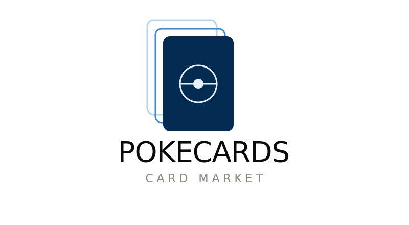

@if(isOpen) {
<div class="sidebar-overlay" (click)="toggleSidebar()"></div>
}

<nav class="sidebar" [class.open]="isOpen">
    <div class="sidebar-header">

        

        <button class="close-button" (click)="toggleSidebar()">
            <svg xmlns="http://www.w3.org/2000/svg" width="24" height="24" viewBox="0 0 24 24" fill="none"
                stroke="white" stroke-width="2" stroke-linecap="round" stroke-linejoin="round"
                class="lucide lucide-chevron-left-icon lucide-chevron-left">
                <path d="m15 18-6-6 6-6" />
            </svg>
        </button>
    </div>

    <div class="side-bar-links">
        <ul class="nav-list top">
            <li>
                <a routerLinkActive="active" [routerLink]="['/']" (click)="closeSidebar()">
                    <svg xmlns="http://www.w3.org/2000/svg" width="16" height="16" viewBox="0 0 24 24" fill="none"
                        stroke="currentColor" stroke-width="2" stroke-linecap="round" stroke-linejoin="round"
                        class="lucide lucide-log-in-icon lucide-log-in">
                        <path d="m10 17 5-5-5-5" />
                        <path d="M15 12H3" />
                        <path d="M15 3h4a2 2 0 0 1 2 2v14a2 2 0 0 1-2 2h-4" />
                    </svg>
                    Login
                </a>
            </li>
            <li>
                <a routerLink="/register" routerLinkActive="active" (click)="closeSidebar()">
                    <svg xmlns="http://www.w3.org/2000/svg" width="16" height="16" viewBox="0 0 24 24" fill="none"
                        stroke="currentColor" stroke-width="2" stroke-linecap="round" stroke-linejoin="round">
                        <path d="M16 21v-2a4 4 0 0 0-4-4H6a4 4 0 0 0-4 4v2" />
                        <path d="M16 3.128a4 4 0 0 1 0 7.744" />
                        <path d="M22 21v-2a4 4 0 0 0-3-3.87" />
                        <circle cx="9" cy="7" r="4" />
                    </svg>
                    Register
                </a>
            </li>

            <li>
                <a routerLink="/packs" routerLinkActive="active" (click)="closeSidebar()">
                    <svg xmlns="http://www.w3.org/2000/svg" color="white" width="16" height="16" viewBox="0 0 24 24">
                        <path fill="currentColor"
                            d="M11.19 2.25c-.26 0-.52.06-.77.15L3.06 5.45a1.994 1.994 0 0 0-1.09 2.6L6.93 20a2 2 0 0 0 1.81 1.25c.26 0 .53-.03.79-.15l7.37-3.05a2.02 2.02 0 0 0 1.23-1.8c.01-.25-.04-.54-.13-.8L13 3.5a1.95 1.95 0 0 0-1.81-1.25m3.48 0l3.45 8.35V4.25a2 2 0 0 0-2-2m4.01 1.54v9.03l2.43-5.86a1.99 1.99 0 0 0-1.09-2.6m-10.28-.14l4.98 12.02l-7.39 3.06L3.8 7.29" />
                    </svg>
                    Packs
                </a>
            </li>
        </ul>


        <ul class="nav-list bottom">
            <li>
                <a routerLink="/settings" routerLinkActive="active" (click)="closeSidebar()">
                    <svg xmlns="http://www.w3.org/2000/svg" width="14" height="14" viewBox="0 0 24 24" fill="none"
                        stroke="currentColor" stroke-width="2" stroke-linecap="round" stroke-linejoin="round">
                        <path d="M11 10.27 7 3.34" />
                        <path d="m11 13.73-4 6.93" />
                        <path d="M12 22v-2" />
                        <path d="M12 2v2" />
                        <path d="M14 12h8" />
                        <path d="m17 20.66-1-1.73" />
                        <path d="m17 3.34-1 1.73" />
                        <path d="M2 12h2" />
                        <path d="m20.66 17-1.73-1" />
                        <path d="m20.66 7-1.73 1" />
                        <path d="m3.34 17 1.73-1" />
                        <path d="m3.34 7 1.73 1" />
                        <circle cx="12" cy="12" r="2" />
                        <circle cx="12" cy="12" r="8" />
                    </svg>
                    Settings
                </a>
            </li>
            <li>
                <a (click)="logout()">
                    <svg xmlns="http://www.w3.org/2000/svg" width="14" height="14" viewBox="0 0 24 24" fill="none"
                        stroke="currentColor" stroke-width="2" stroke-linecap="round" stroke-linejoin="round">
                        <path d="m16 17 5-5-5-5" />
                        <path d="M21 12H9" />
                        <path d="M9 21H5a2 2 0 0 1-2-2V5a2 2 0 0 1 2-2h4" />
                    </svg>
                    Logout
                </a>
            </li>
        </ul>
    </div>
</nav>